Heatmap, Circular, and Periodic Variants
kodom-variants.RmdThis vignette covers geom_kodom_heatmap(),
geom_kodom_circular(), and
geom_kodom_periodic() — three layouts built on the same
aesthetic contract as geom_kodom_line() (see the companion
vignette for path-specific features: lane ordering, point shapes,
independent size/linewidth, etc.).
| Layout | Best for |
|---|---|
| Heatmap | Large cohorts; time windows as clinical milestones |
| Circular | Medium cohorts; single sweep from baseline to end |
| Periodic | Cyclical data; intra-cycle pattern and inter-cycle drift |
Sample data
Two datasets are used. The small cohort (25 patients, irregular visits) is identical to the companion vignette and serves the circular examples. The large cohort (100 patients) demonstrates where the heatmap layout outperforms individual paths.
set.seed(42)
make_cohort <- function(n_subjects, seed = 42) {
set.seed(seed)
n_obs_per <- sample(6:12, n_subjects, replace = TRUE)
do.call(rbind, lapply(seq_len(n_subjects), function(i) {
n <- n_obs_per[i]
base <- rnorm(1, mean = 7.5, sd = 1.2)
trend <- rnorm(1, mean = -0.02, sd = 0.01)
time <- sort(runif(n, 0, 24))
value <- base + trend * time + rnorm(n, sd = 0.4)
data.frame(
subject_id = sprintf("P%03d", i),
visit_month = time,
hba1c = pmax(4, value),
arm = ifelse(i <= round(n_subjects / 2), "Treatment", "Control"),
stringsAsFactors = FALSE
)
}))
}
df_small <- make_cohort(25)
df_large <- make_cohort(100)Part I — geom_kodom_heatmap()
The heatmap geom bins the time axis into equal-width intervals and
fills each (subject × bin) cell with an aggregate of the
fill aesthetic. Because every subject occupies exactly one
row regardless of visit count, the layout stays readable even for large
cohorts.
1. Basic usage
Map fill (not colour) to the measurement
value. The stat handles binning and aggregation automatically; the
default is 10 equal-width bins averaged by mean.
ggplot(df_small, aes(x = visit_month, id = subject_id, fill = hba1c)) +
geom_kodom_heatmap() +
scale_fill_kodom(name = "HbA1c (%)") +
labs(x = "Visit (months)", y = "") +
theme_kodom()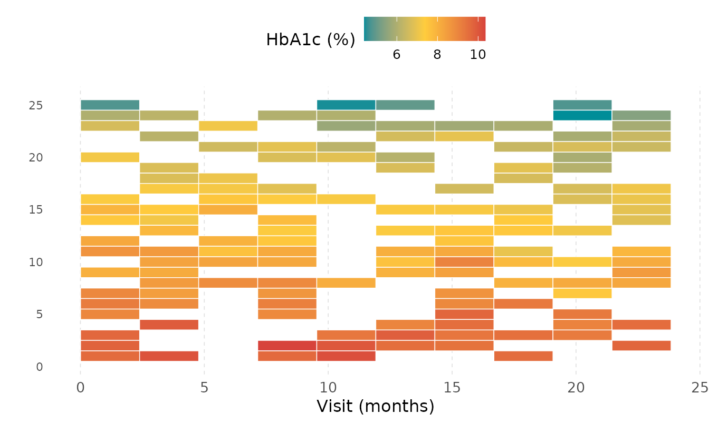
Each cell is the mean HbA1c for that subject during that time window.
White borders separate cells (controlled by colour and
linewidth aesthetics on the geom, not the scale).
2. Choosing bin resolution with bins
Fewer bins give a broader summary; more bins reveal finer temporal structure. Compare 5, 10, and 20 bins on the large cohort:
ggplot(df_large, aes(x = visit_month, id = subject_id, fill = hba1c)) +
geom_kodom_heatmap(bins = 5, sort_by = "mean") +
scale_fill_kodom(name = "HbA1c (%)") +
labs(x = "Visit (months)", y = "", title = "bins = 5") +
theme_kodom() +
theme(axis.text.y = element_blank())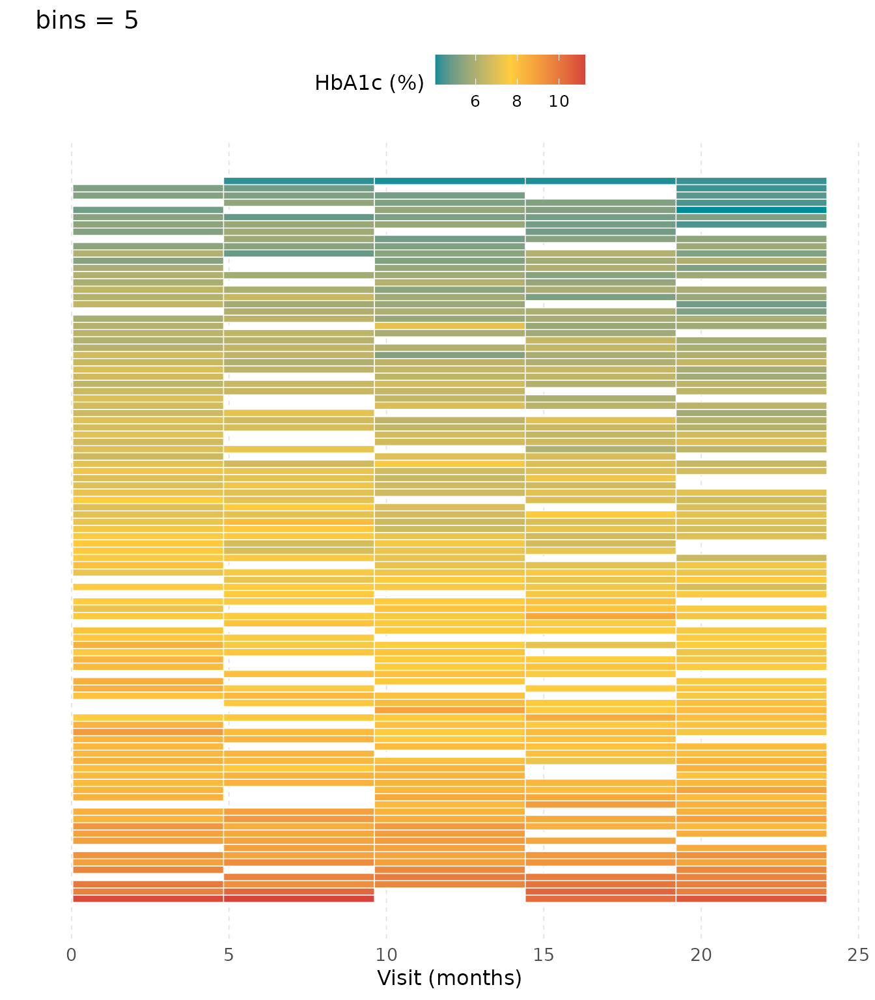
ggplot(df_large, aes(x = visit_month, id = subject_id, fill = hba1c)) +
geom_kodom_heatmap(bins = 20, sort_by = "mean") +
scale_fill_kodom(name = "HbA1c (%)") +
labs(x = "Visit (months)", y = "", title = "bins = 20") +
theme_kodom() +
theme(axis.text.y = element_blank())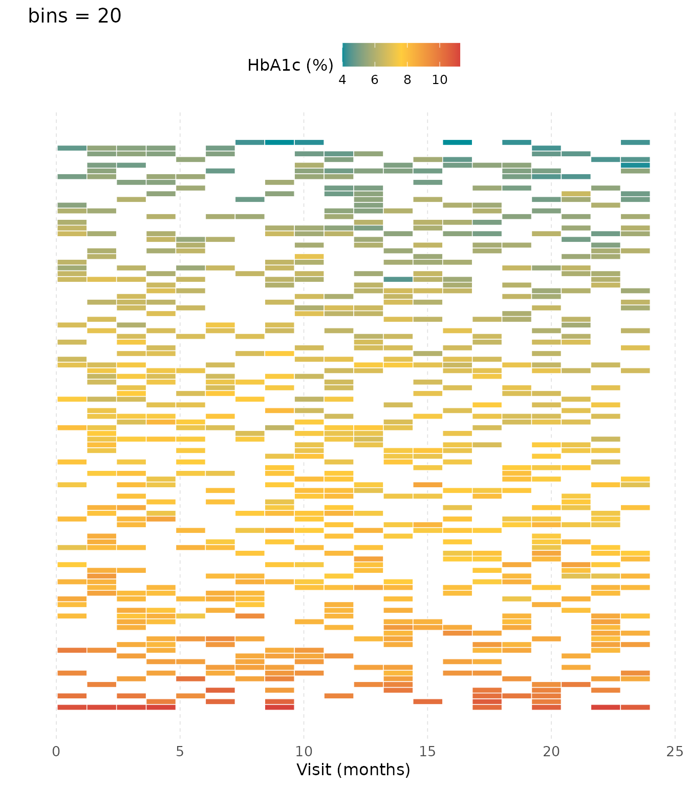
More bins can produce empty cells (grey) when subjects miss a window entirely. Fewer bins mask short-term fluctuations but give a cleaner read.
3. Clinical time windows with breaks
Instead of equal-width bins, supply explicit boundaries aligned to study milestones. Here we use 0, 6, 12, 18, and 24 months to match typical quarterly assessment windows.
ggplot(df_small, aes(x = visit_month, id = subject_id, fill = hba1c)) +
geom_kodom_heatmap(
breaks = c(0, 6, 12, 18, 24),
sort_by = "mean"
) +
scale_fill_kodom(name = "HbA1c (%)") +
labs(x = "Study quarter (months)", y = "") +
theme_kodom()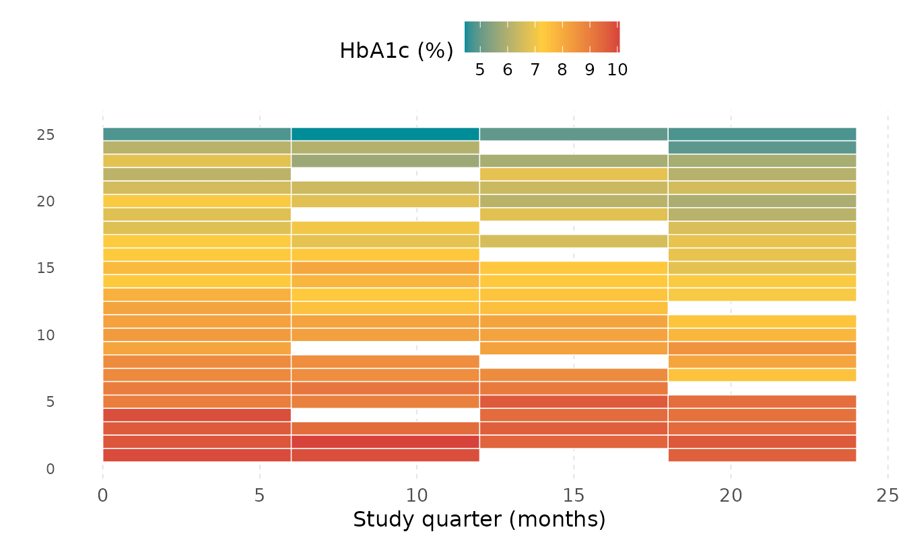
breaks overrides bins. Bin midpoints are
used as the x-axis position for each tile, so
scale_x_continuous() labels remain meaningful.
4. Aggregation functions with fun
The default fun = "mean" smooths over within-window
variation. Other options surface different clinical signals:
-
"first"/"last"— baseline or endpoint value in each window -
"max"— worst reading per window (useful for hypoglycaemia risk) -
"min"— best reading per window
ggplot(df_small, aes(x = visit_month, id = subject_id, fill = hba1c)) +
geom_kodom_heatmap(
breaks = c(0, 6, 12, 18, 24),
fun = "first",
sort_by = "mean"
) +
scale_fill_kodom(name = "HbA1c (%)") +
labs(
x = "Study quarter", y = "",
title = 'fun = "first" — earliest reading per window'
) +
theme_kodom()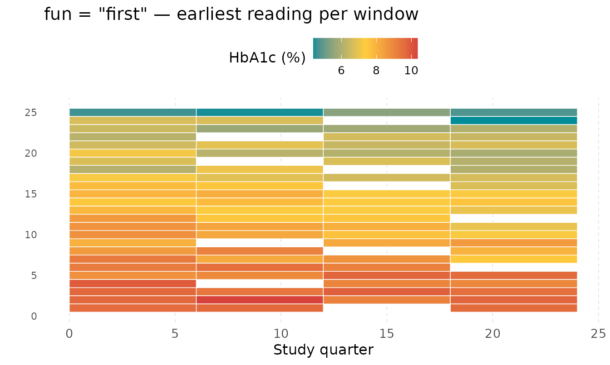
ggplot(df_small, aes(x = visit_month, id = subject_id, fill = hba1c)) +
geom_kodom_heatmap(
breaks = c(0, 6, 12, 18, 24),
fun = "max",
sort_by = "mean"
) +
scale_fill_kodom(name = "HbA1c (%)") +
labs(
x = "Study quarter", y = "",
title = 'fun = "max" — peak reading per window'
) +
theme_kodom()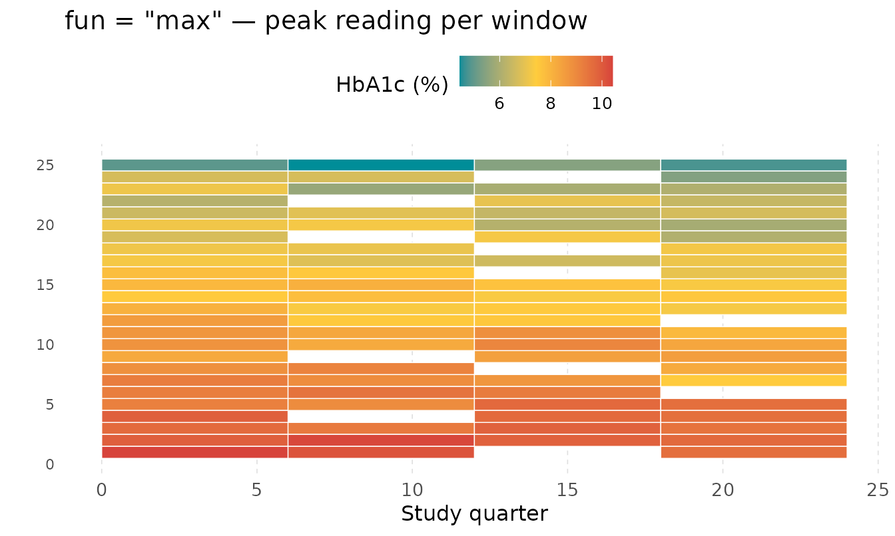
5. Large cohorts — where heatmap wins
geom_kodom_line() becomes unreadable beyond ~50
subjects; the heatmap stays legible at 100 or more. Suppress y-axis text
for large cohorts.
ggplot(df_large, aes(x = visit_month, id = subject_id, fill = hba1c)) +
geom_kodom_heatmap(bins = 12, sort_by = "mean") +
scale_fill_kodom(
discretize = TRUE,
color_breaks = c(5.7, 6.5, 8),
name = "HbA1c (%)"
) +
labs(
x = "Visit (months)",
y = "",
title = "100-patient cohort — discrete clinical bands"
) +
theme_kodom() +
theme(axis.text.y = element_blank())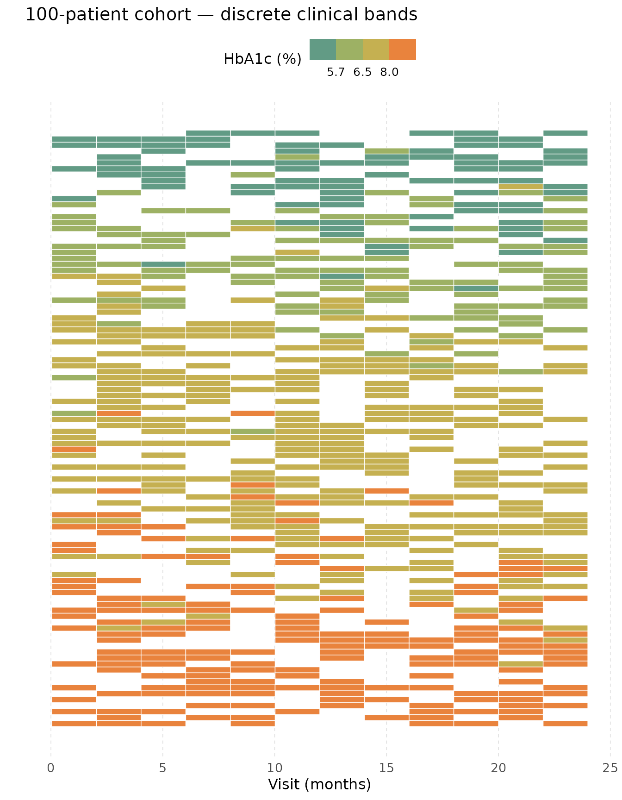
discretize = TRUE with clinical thresholds (normal <
5.7, pre-diabetic 5.7–6.5, diabetic 6.5–8, poorly controlled > 8)
converts the continuous gradient into solid color bands. Each row
becomes an instant status classification.
6. Faceting by treatment arm
Because geom_kodom_heatmap() is a standard ggplot2
layer, facet_wrap() works without any extra configuration.
Lane ordering is computed within each facet panel independently.
ggplot(df_large, aes(x = visit_month, id = subject_id, fill = hba1c)) +
geom_kodom_heatmap(bins = 8, sort_by = "mean") +
scale_fill_kodom(
discretize = TRUE,
color_breaks = c(5.7, 6.5, 8),
name = "HbA1c (%)"
) +
facet_wrap(~arm, ncol = 1, scales = "free_y") +
labs(x = "Visit (months)", y = "", title = "Treatment vs. Control") +
theme_kodom() +
theme(axis.text.y = element_blank())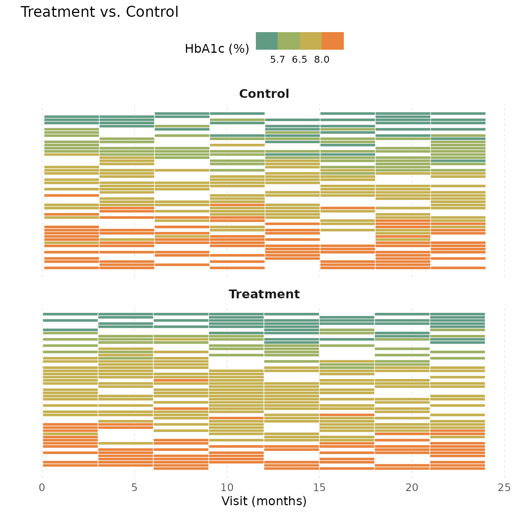
scales = "free_y" gives each panel its own set of lanes
so subjects are not shared across facets — each panel shows only the
subjects in that arm.
7. Adjusting tile borders
The colour and linewidth aesthetics on the
tile control cell borders, not the fill scale. Pass them as fixed values
directly to the geom.
ggplot(df_small, aes(x = visit_month, id = subject_id, fill = hba1c)) +
geom_kodom_heatmap(
breaks = c(0, 6, 12, 18, 24),
colour = "grey60",
linewidth = 0.8
) +
scale_fill_kodom(name = "HbA1c (%)") +
labs(x = "Study quarter", y = "", title = "Visible grey cell borders") +
theme_kodom()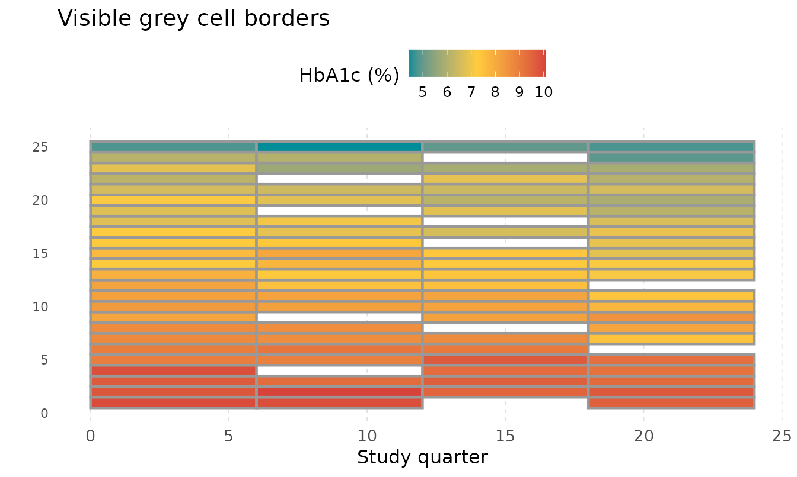
Set colour = NA or linewidth = 0 to remove
borders entirely for a seamless mosaic appearance.
Part II — geom_kodom_circular()
The circular geom projects each subject onto a radial spoke, with time increasing outward from the centre and value encoded as a colour gradient along the spoke. The layout resembles a Kadam flower (Neolamarckia cadamba), giving the package its name.
Internally the stat converts lane ranks to angles and time to radius,
then renders in ordinary Cartesian space — no coord_polar()
is used. Always pair with coord_fixed() to preserve the
circular shape.
8. Basic circular plot
Map colour to the measurement value, just as with
geom_kodom_line(). Add coord_fixed() and
theme_kodom_circular().
ggplot(df_small, aes(x = visit_month, id = subject_id, colour = hba1c)) +
geom_kodom_circular() +
scale_colour_kodom(name = "HbA1c (%)") +
coord_fixed() +
theme_kodom_circular() +
labs(title = "Circular Kodom Layout — 25 patients")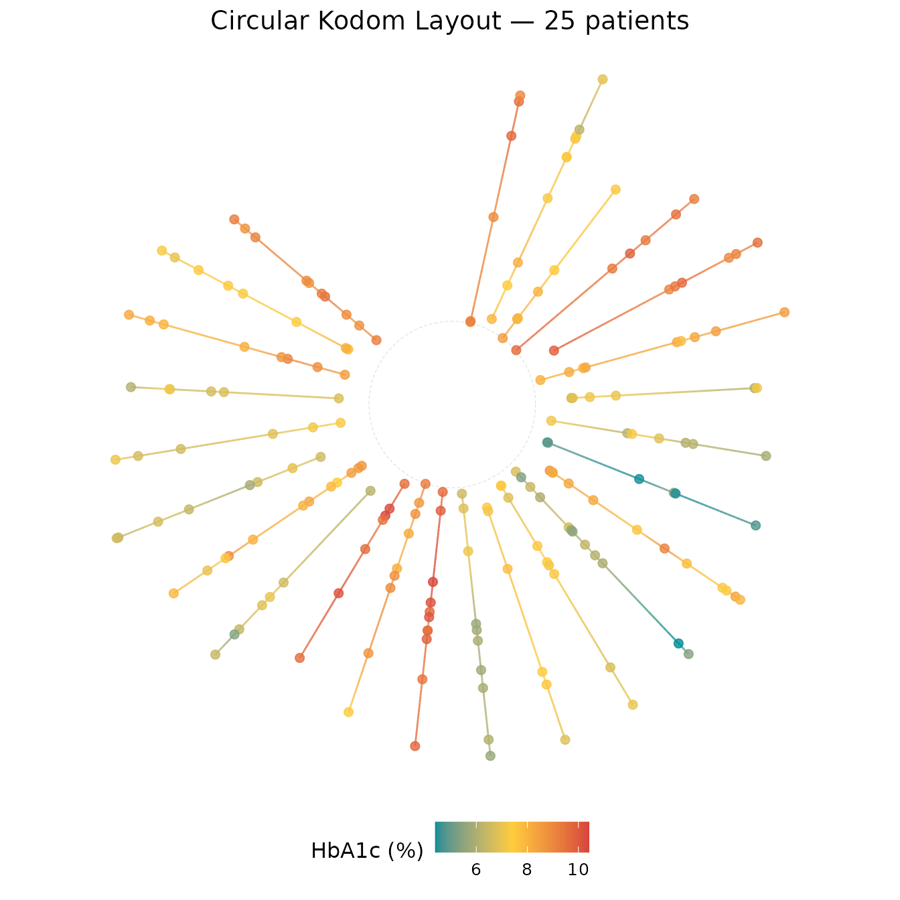
Each spoke is one patient. Time increases outward; teal (low HbA1c) and red (high) are drawn as smooth gradients along each spoke.
9. Lane ordering and the visual effect on the flower
sort_by controls the angular order of spokes.
"mean" groups similar patients into arcs of the same hue,
revealing structure that "none" scatters randomly.
ggplot(df_small, aes(x = visit_month, id = subject_id, colour = hba1c)) +
geom_kodom_circular(sort_by = "none") +
scale_colour_kodom(name = "HbA1c (%)") +
coord_fixed() +
theme_kodom_circular() +
labs(title = 'sort_by = "none" — random spoke order')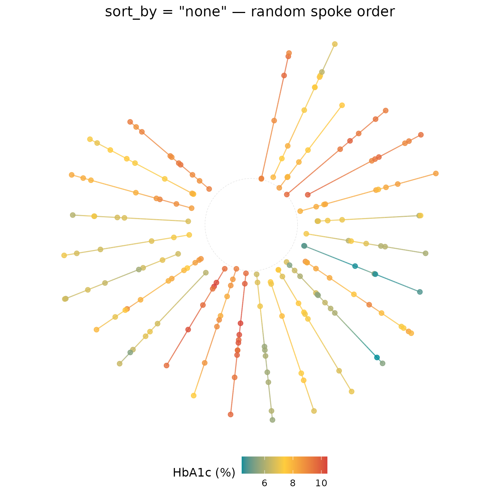
ggplot(df_small, aes(x = visit_month, id = subject_id, colour = hba1c)) +
geom_kodom_circular(sort_by = "mean") +
scale_colour_kodom(name = "HbA1c (%)") +
coord_fixed() +
theme_kodom_circular() +
labs(title = 'sort_by = "mean" — high-mean spokes cluster together')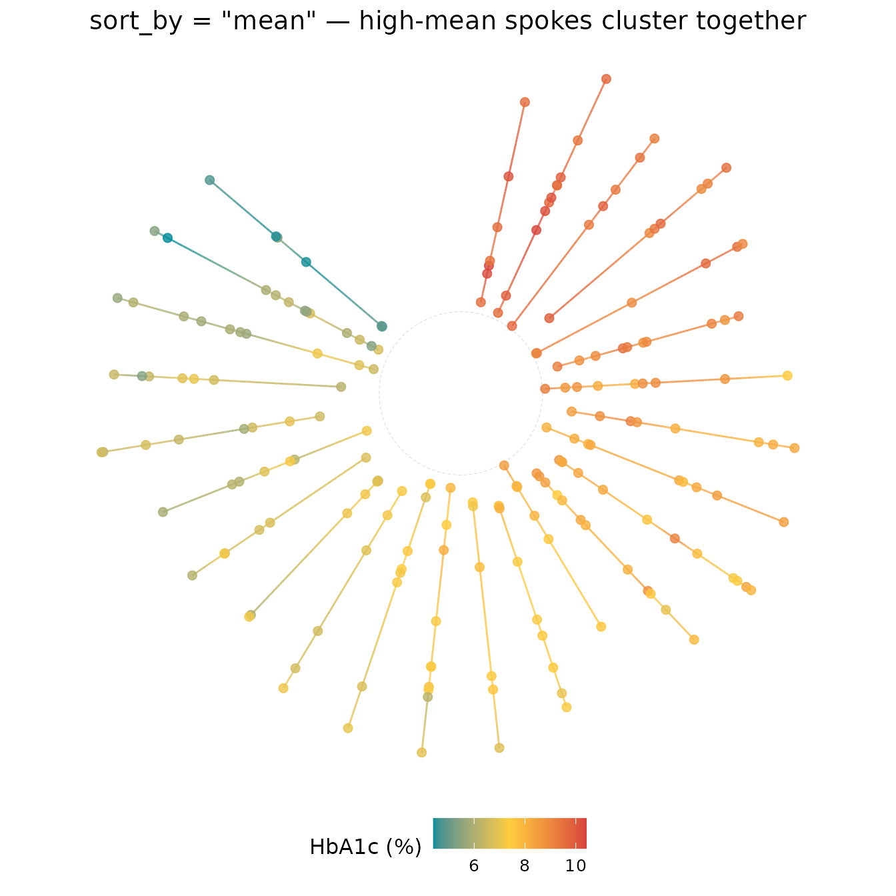
10. The seam gap with gap_fraction
gap_fraction (default 0.15) leaves an empty
wedge at the ordering seam so the first and last subject are clearly
separated. Increase it for a fan/semicircle layout; reduce it toward
0 for a nearly complete ring.
ggplot(df_small, aes(x = visit_month, id = subject_id, colour = hba1c)) +
geom_kodom_circular(sort_by = "mean", gap_fraction = 0.03) +
scale_colour_kodom(name = "HbA1c (%)") +
coord_fixed() +
theme_kodom_circular() +
labs(title = "gap_fraction = 0.03 — near-complete ring")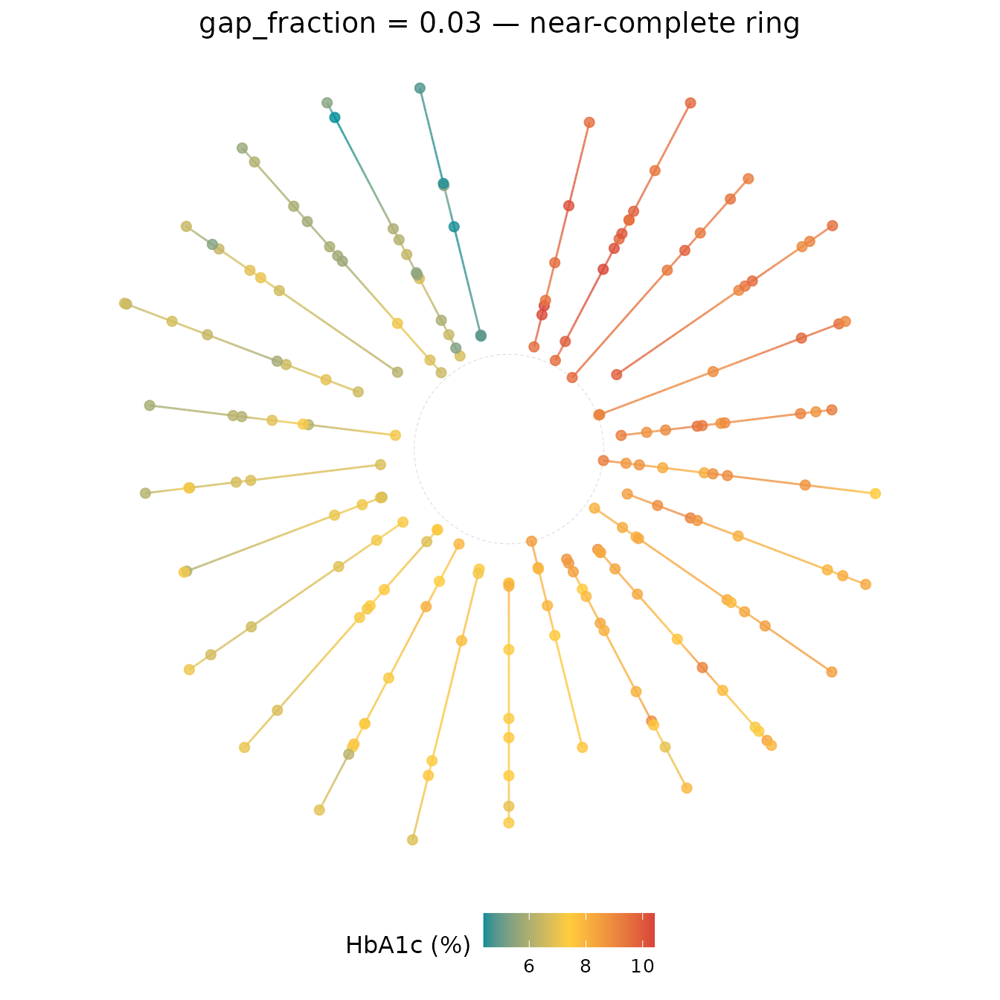
ggplot(df_small, aes(x = visit_month, id = subject_id, colour = hba1c)) +
geom_kodom_circular(sort_by = "mean", gap_fraction = 0.35) +
scale_colour_kodom(name = "HbA1c (%)") +
coord_fixed() +
theme_kodom_circular() +
labs(title = "gap_fraction = 0.35 — fan layout")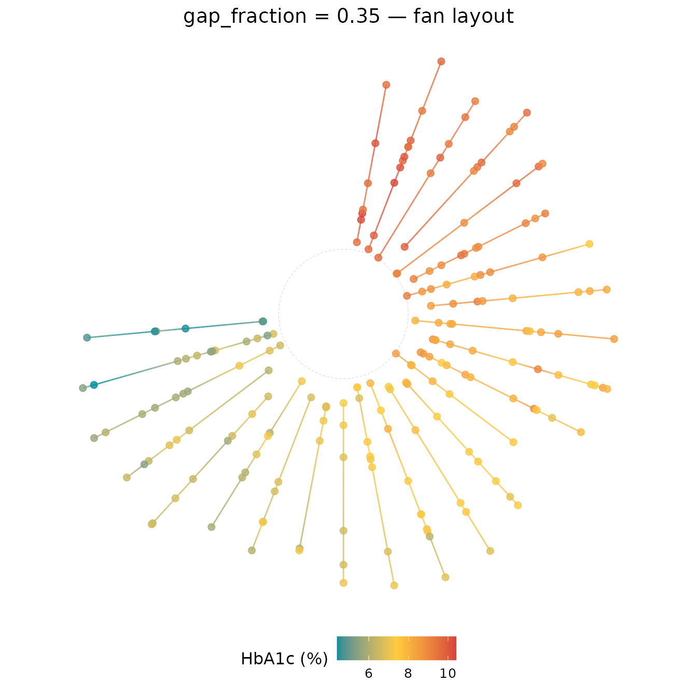
11. Hollow centre with inner_fraction
inner_fraction (default 0.3) adds a radial
buffer so that subjects with short follow-up are not collapsed to a dot
at the origin. Increase it for more whitespace; set it to 0
to start spokes at the centre.
ggplot(df_small, aes(x = visit_month, id = subject_id, colour = hba1c)) +
geom_kodom_circular(sort_by = "mean", inner_fraction = 0) +
scale_colour_kodom(name = "HbA1c (%)") +
coord_fixed() +
theme_kodom_circular() +
labs(title = "inner_fraction = 0 — spokes from the centre")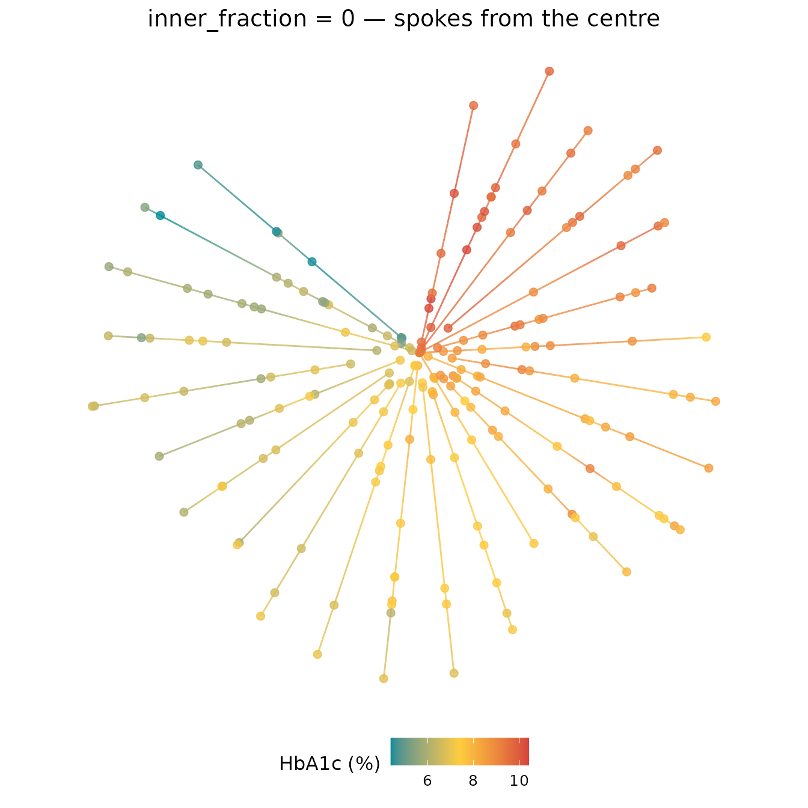
ggplot(df_small, aes(x = visit_month, id = subject_id, colour = hba1c)) +
geom_kodom_circular(sort_by = "mean", inner_fraction = 0.6) +
scale_colour_kodom(name = "HbA1c (%)") +
coord_fixed() +
theme_kodom_circular() +
labs(title = "inner_fraction = 0.6 — wide hollow centre")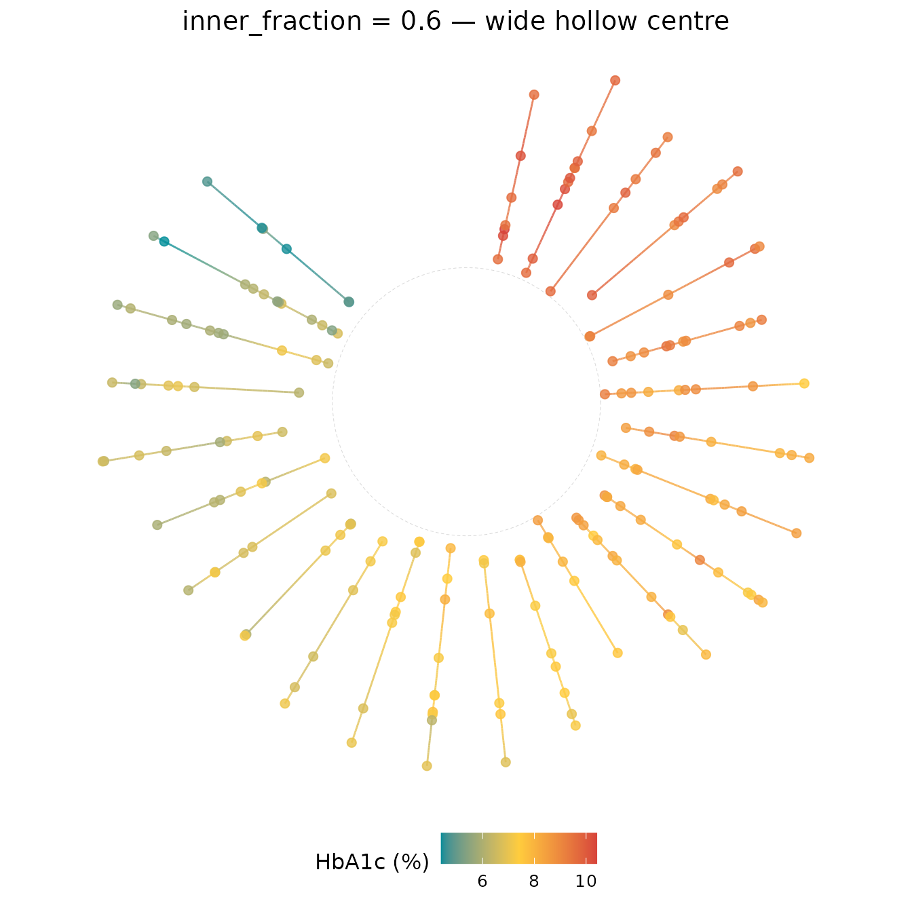
12. Clockwise vs. counter-clockwise with direction
direction = 1L (default) places lanes clockwise from the
top. direction = -1L reverses the ordering.
ggplot(df_small, aes(x = visit_month, id = subject_id, colour = hba1c)) +
geom_kodom_circular(sort_by = "mean", direction = -1L) +
scale_colour_kodom(name = "HbA1c (%)") +
coord_fixed() +
theme_kodom_circular() +
labs(title = "direction = -1L — counter-clockwise")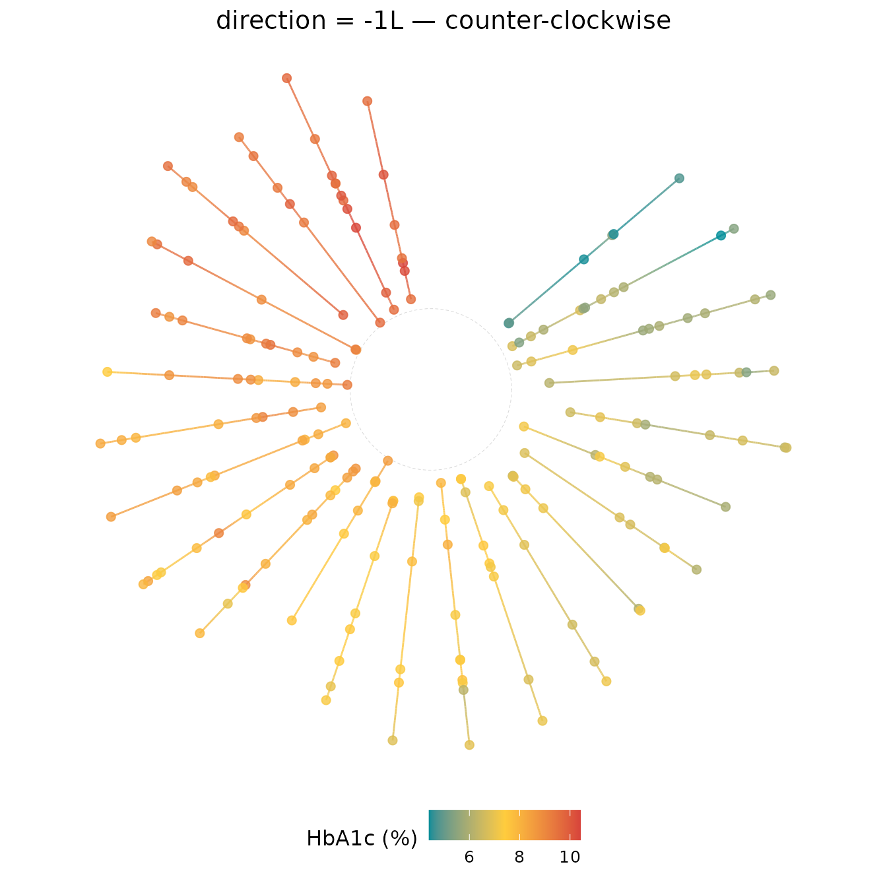
13. Suppressing or resizing observation points
show_points = FALSE removes the markers, leaving only
the gradient path. size controls point size exactly as in
geom_kodom_line(). A smaller default
(size = 2.0) suits the compact circular layout.
ggplot(df_small, aes(x = visit_month, id = subject_id, colour = hba1c)) +
geom_kodom_circular(sort_by = "mean", show_points = FALSE) +
scale_colour_kodom(name = "HbA1c (%)") +
coord_fixed() +
theme_kodom_circular() +
labs(title = "show_points = FALSE — gradient paths only")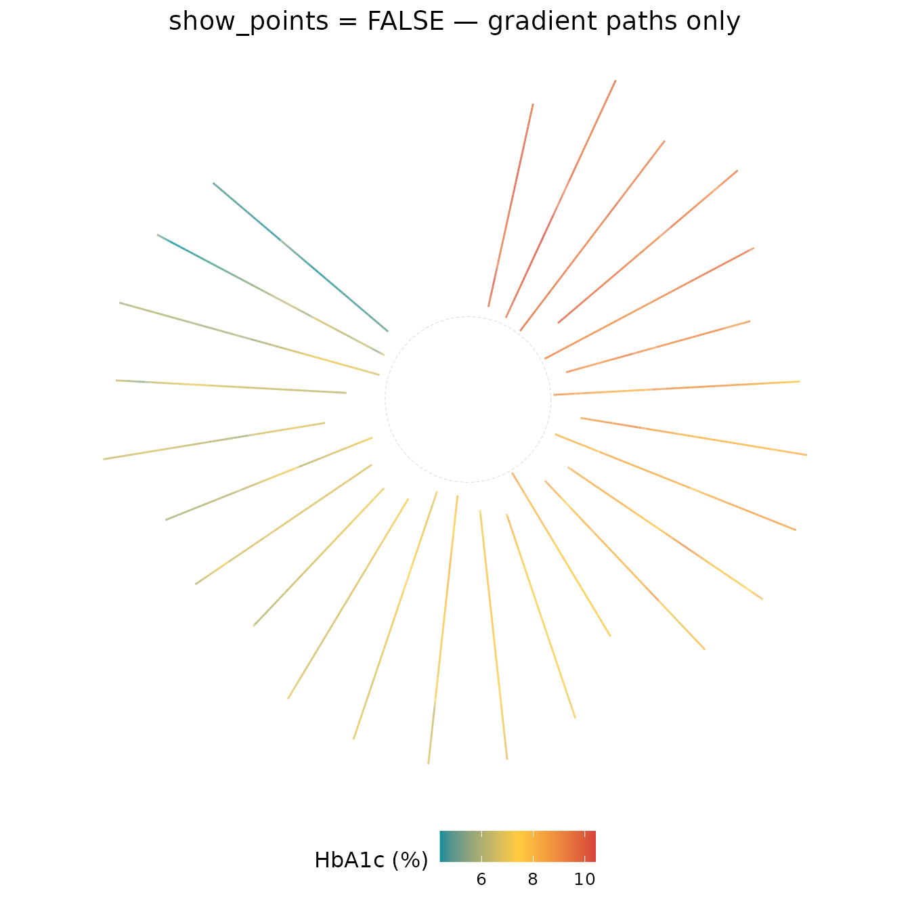
ggplot(df_small, aes(x = visit_month, id = subject_id, colour = hba1c)) +
geom_kodom_circular(sort_by = "mean", size = 3.5, linewidth = 0.3) +
scale_colour_kodom(name = "HbA1c (%)") +
coord_fixed() +
theme_kodom_circular() +
labs(title = "Larger points, thinner paths")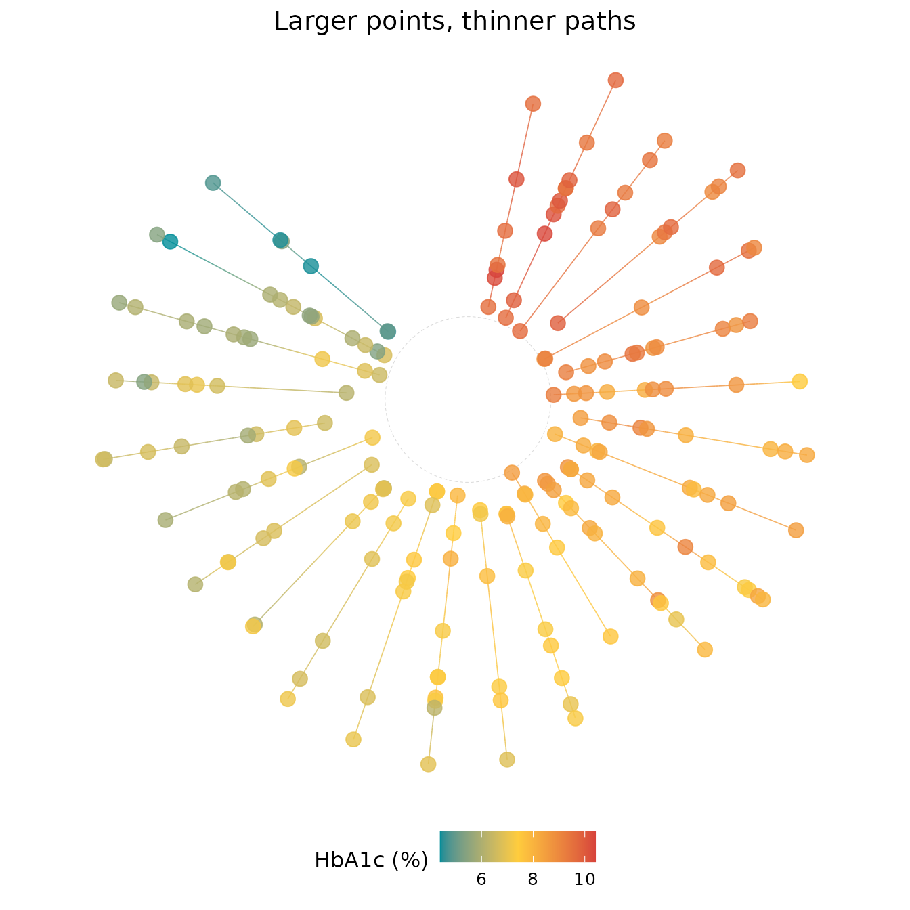
14. Large cohort — circular as a population fingerprint
With 100 subjects the individual spokes pack tightly, creating a dense ring that functions as a population-level visual fingerprint. Suppressing points and using thin paths keeps the display legible.
ggplot(df_large, aes(x = visit_month, id = subject_id, colour = hba1c)) +
geom_kodom_circular(
sort_by = "mean",
show_points = FALSE,
linewidth = 0.4,
gap_fraction = 0.08
) +
scale_colour_kodom(
discretize = TRUE,
color_breaks = c(5.7, 6.5, 8),
name = "HbA1c (%)"
) +
coord_fixed() +
theme_kodom_circular() +
labs(title = "100 patients — population fingerprint")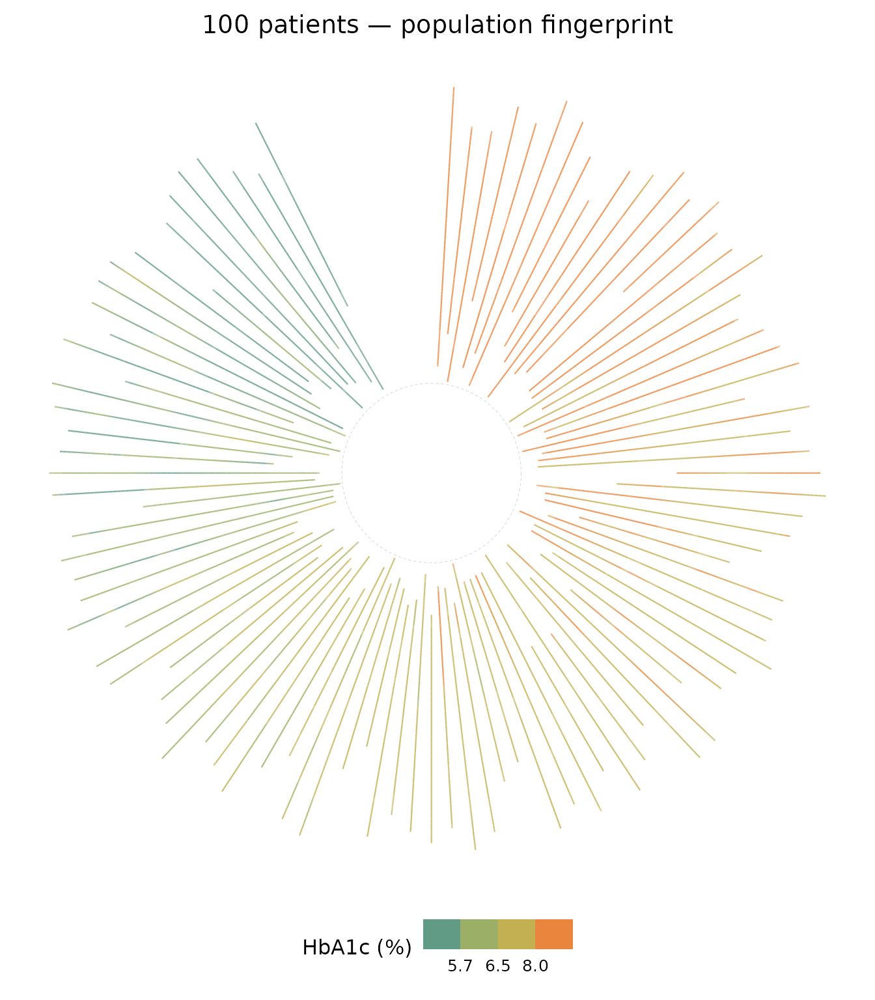
Subjects with high mean HbA1c cluster in one arc; well-controlled patients occupy the opposite arc. The colour ring makes the population split visible at a glance.
15. Combining circular and heatmap: a side-by-side summary
The two layouts are complementary. Use patchwork (or
gridExtra) to place them together for a publication-ready
comparison panel.
library(patchwork)
p_heat <- ggplot(
df_small, aes(x = visit_month, id = subject_id, fill = hba1c)
) +
geom_kodom_heatmap(bins = 6, sort_by = "mean") +
scale_fill_kodom(name = "HbA1c (%)") +
labs(x = "Visit (months)", y = "", title = "Heatmap") +
theme_kodom(legend_position = "bottom")
p_circ <- ggplot(
df_small, aes(x = visit_month, id = subject_id, colour = hba1c)
) +
geom_kodom_circular(sort_by = "mean", show_points = FALSE) +
scale_colour_kodom(name = "HbA1c (%)") +
coord_fixed() +
theme_kodom_circular() +
labs(title = "Circular")
p_heat + p_circ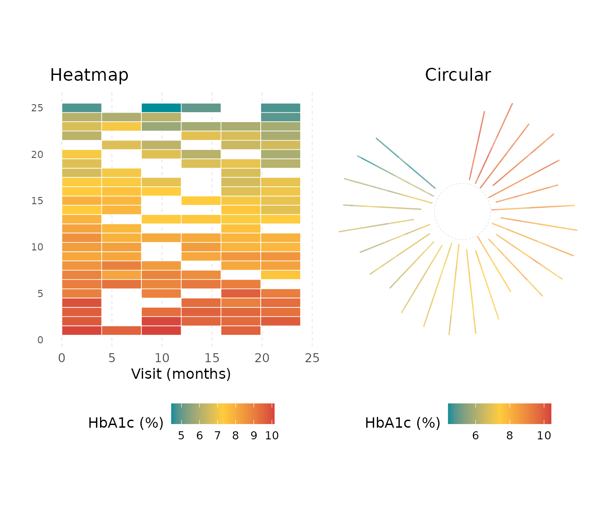
Part III — geom_kodom_periodic()
geom_kodom_periodic() is built for cyclical
longitudinal data — measurements that repeat with a known
period (months in a year, hours in a day, seasonal study cycles). Each
subject occupies a concentric ring; time maps to angle so that one full
revolution equals one period. To avoid cycles overlapping exactly, the
radius expands slowly as time progresses, creating a
star-trail or spiral effect.
Key difference from geom_kodom_circular():
- Circular: angle = subject identity; time increases outward along a spoke.
- Periodic: angle = time within the cycle; radius increases slowly to separate successive cycles of the same subject.
Every plot needs three companion calls alongside the geom:
-
scale_y_kodom_periodic()— pinsy = 0at the centre so theinner_fractionhollow gap is visible (without it, ggplot2 auto-ranges from the minimum data radius and the hole disappears). -
coord_kodom_periodic()— thin wrapper aroundcoord_polar(theta = "x", start = pi/2, direction = -1). -
scale_x_continuous()— labels the angular axis (month names, hours, etc.).
16. Basic star-trail plot with month labels
With period = 12 one revolution spans one year.
scale_x_kodom_periodic() adds abbreviated month names
around the ring — no separate annotation layer needed.
ggplot(df_small, aes(x = visit_month, id = subject_id, colour = hba1c)) +
geom_kodom_periodic(period = 12) +
scale_x_kodom_periodic(period = 12, breaks = 0:11, labels = month.abb) +
scale_colour_kodom(name = "HbA1c (%)") +
scale_y_kodom_periodic() +
coord_kodom_periodic() +
theme_kodom_periodic() +
labs(title = "Star-trail plot — 25 patients, period = 12 months")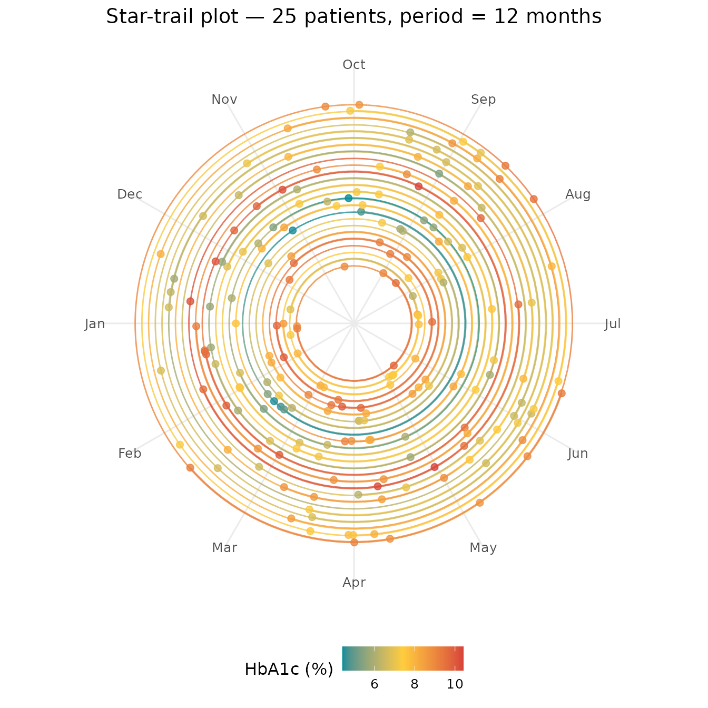
Teal arcs (low HbA1c) hug the inner rings; red arcs sit further out. The gap between a subject’s inner and outer arc reflects change across two full cycles.
17. Spiral expansion with spiral_fraction
spiral_fraction (default 0.1) is the radial
increment per full cycle, expressed as a fraction of one lane width. Set
it to 0 for pure concentric rings (cycles overlap);
increase it to spread cycles farther apart.
ggplot(df_small, aes(x = visit_month, id = subject_id, colour = hba1c)) +
geom_kodom_periodic(period = 12, spiral_fraction = 0) +
scale_x_kodom_periodic(period = 12, breaks = 0:11, labels = month.abb) +
scale_colour_kodom(name = "HbA1c (%)") +
scale_y_kodom_periodic() +
coord_kodom_periodic() +
theme_kodom_periodic() +
labs(title = "spiral_fraction = 0 — year 1 and year 2 overlap on one ring")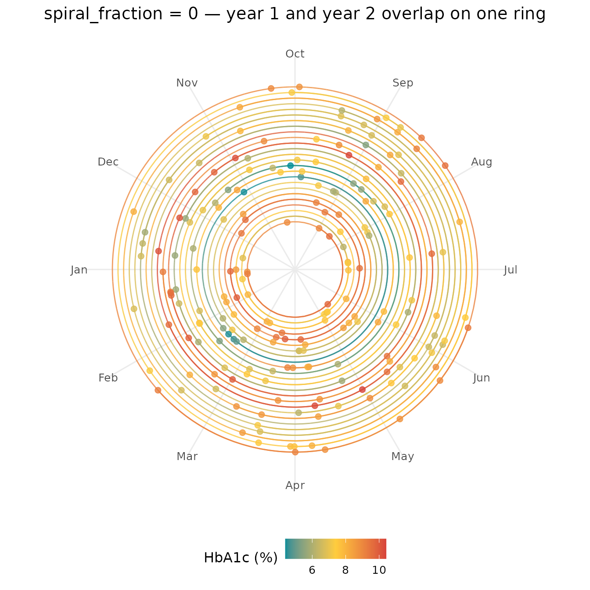
ggplot(df_small, aes(x = visit_month, id = subject_id, colour = hba1c)) +
geom_kodom_periodic(period = 12, spiral_fraction = 0.4) +
scale_x_kodom_periodic(period = 12, breaks = 0:11, labels = month.abb) +
scale_colour_kodom(name = "HbA1c (%)") +
scale_y_kodom_periodic() +
coord_kodom_periodic() +
theme_kodom_periodic() +
labs(title = "spiral_fraction = 0.4 — wider separation between cycles")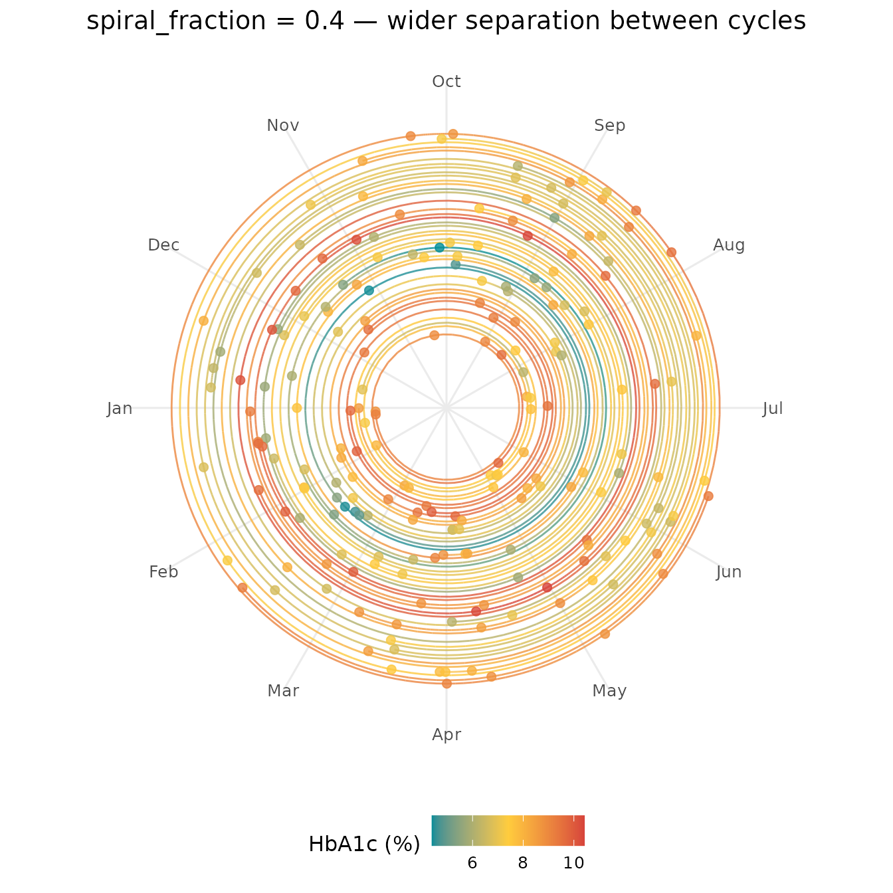
Use spiral_fraction = 0 for a tidy ring-per-subject
summary when cycle-to-cycle change is not the focus; a larger value is
better when you want to read the longitudinal trajectory across
cycles.
18. Matching period to the data
Match period to the natural cycle length of your data.
Here period = 6 produces half-year arcs (four visible per
subject); period = 24 sweeps the entire follow-up in one
arc, eliminating any spiral.
ggplot(df_small, aes(x = visit_month, id = subject_id, colour = hba1c)) +
geom_kodom_periodic(period = 6, spiral_fraction = 0.15) +
scale_x_kodom_periodic(period = 6, breaks = 1:6, labels = month.abb[1:6]) +
scale_colour_kodom(name = "HbA1c (%)") +
scale_y_kodom_periodic() +
coord_kodom_periodic() +
theme_kodom_periodic() +
labs(title = "period = 6 — four half-year arcs per subject")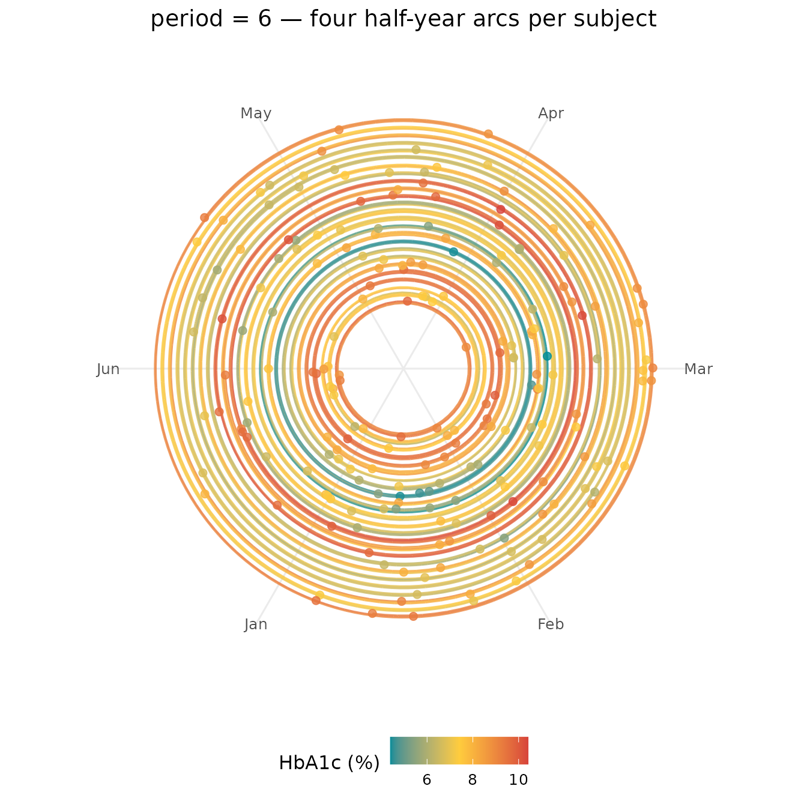
ggplot(df_small, aes(x = visit_month, id = subject_id, colour = hba1c)) +
geom_kodom_periodic(period = 24, spiral_fraction = 0) +
scale_x_kodom_periodic(
period = 24,
breaks = seq(0, 21, by = 3),
labels = paste0("M", seq(0, 21, by = 3))
) +
scale_colour_kodom(name = "HbA1c (%)") +
scale_y_kodom_periodic() +
coord_kodom_periodic() +
theme_kodom_periodic() +
labs(title = "period = 24 — single sweep, no spiral (like circular)")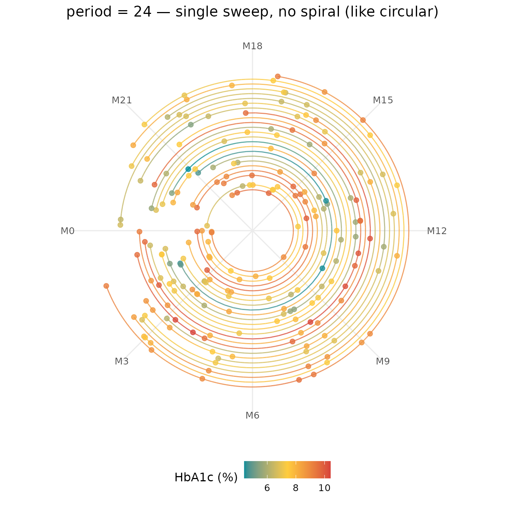
When period equals total follow-up and
spiral_fraction = 0 the output resembles
geom_kodom_circular() — useful as a sanity check.
19. Lane ordering with sort_by
sort_by = "mean" groups subjects with similar average
HbA1c onto adjacent rings, creating concentric bands of the same hue
that are easy to read as population strata.
ggplot(df_small, aes(x = visit_month, id = subject_id, colour = hba1c)) +
geom_kodom_periodic(period = 12, sort_by = "mean") +
scale_x_kodom_periodic(period = 12, breaks = 0:11, labels = month.abb) +
scale_colour_kodom(name = "HbA1c (%)") +
scale_y_kodom_periodic() +
coord_kodom_periodic() +
theme_kodom_periodic() +
labs(title = 'sort_by = "mean" — similar subjects on adjacent rings')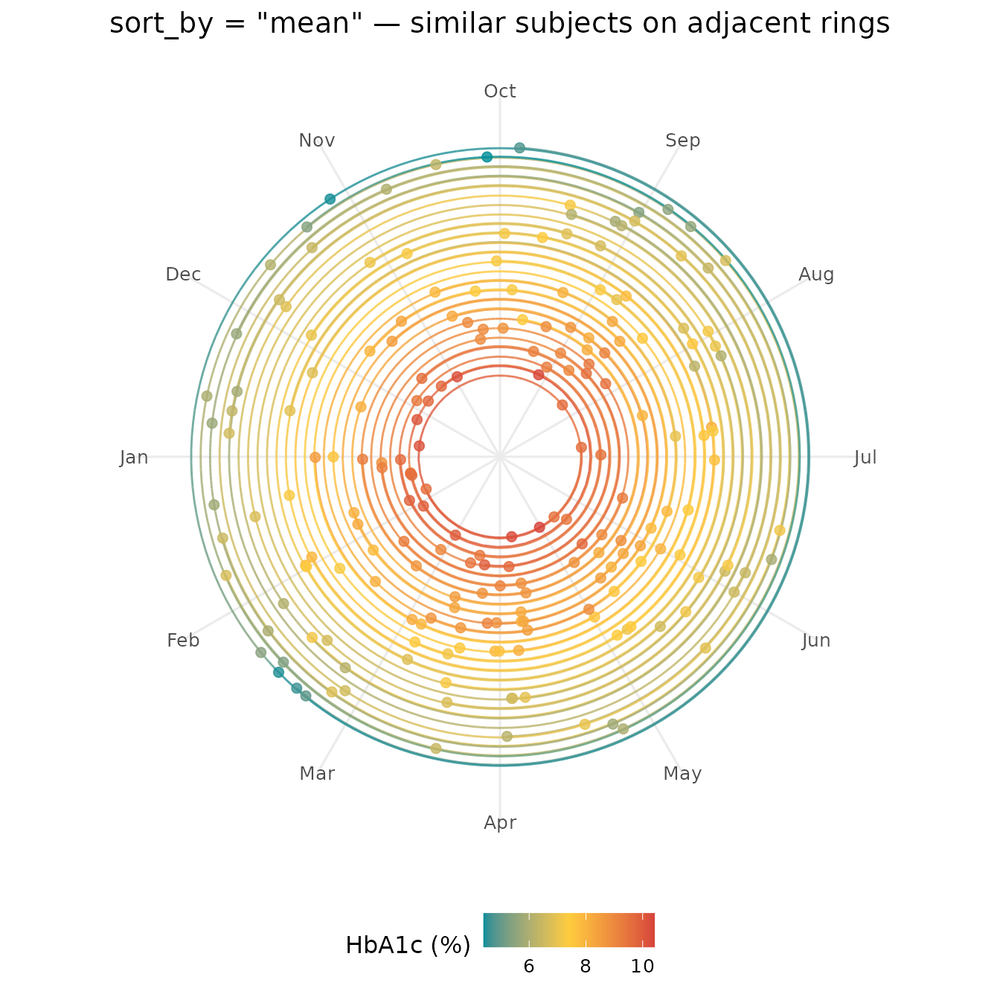
20. Ring spacing with lane_width, and counter-clockwise
direction
lane_width (default 1) multiplies the
radial gap between adjacent subject rings. The hollow centre
(inner_fraction) is deliberately not scaled, so
the hole size stays anchored to the cohort size while the rings spread
apart. This pairs naturally with n_max to spotlight a
readable subset.
ggplot(df_small, aes(x = visit_month, id = subject_id, colour = hba1c)) +
geom_kodom_periodic(
period = 12,
sort_by = "mean",
show_points = FALSE,
n_max = 10,
lane_width = 3
) +
scale_x_kodom_periodic(period = 12, breaks = 0:11, labels = month.abb) +
scale_colour_kodom(name = "HbA1c (%)") +
scale_y_kodom_periodic() +
coord_kodom_periodic() +
theme_kodom_periodic() +
labs(title = "10 subjects, lane_width = 3 — each arc clearly separated")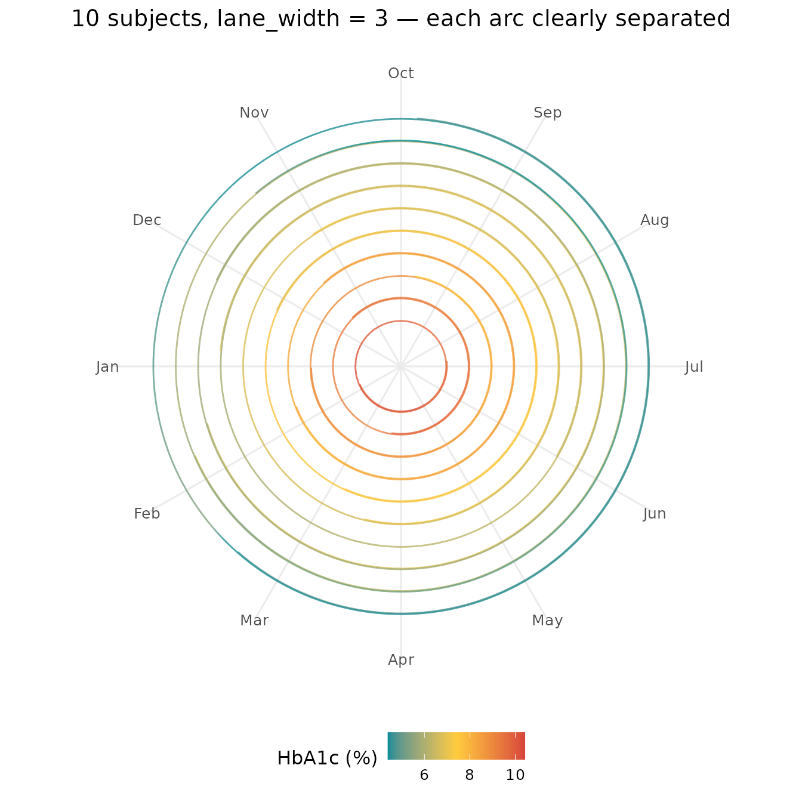
show_points = FALSE leaves only arcs. Pass
clockwise = FALSE to coord_kodom_periodic() to
reverse the sweep direction.
ggplot(df_small, aes(x = visit_month, id = subject_id, colour = hba1c)) +
geom_kodom_periodic(
period = 12,
sort_by = "mean",
show_points = FALSE,
inner_fraction = 0.5
) +
scale_x_kodom_periodic(period = 12, breaks = 0:11, labels = month.abb) +
scale_colour_kodom(name = "HbA1c (%)") +
scale_y_kodom_periodic() +
coord_kodom_periodic(clockwise = FALSE) +
theme_kodom_periodic() +
labs(title = "Arcs only, wide hollow centre, counter-clockwise")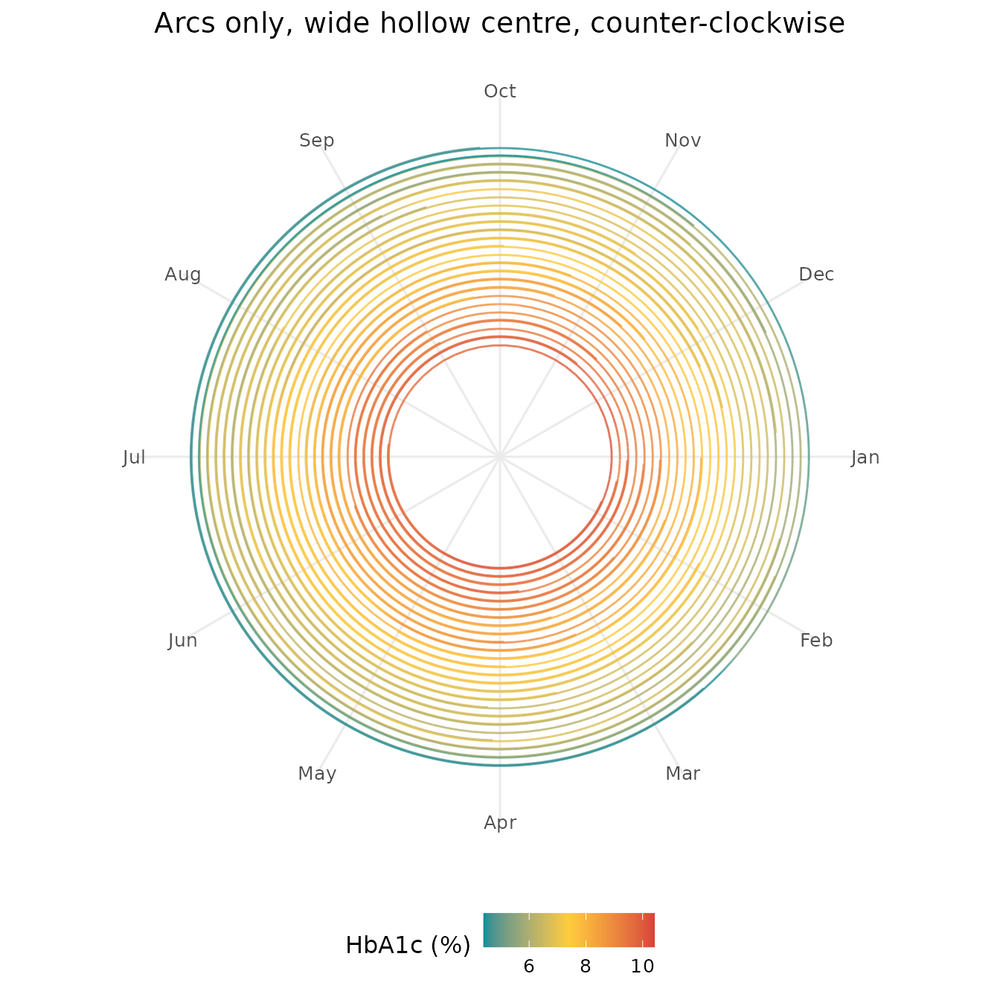
21. Large cohort — population star-trail fingerprint
At 100 subjects the rings pack tightly into a dense spiral. Thin lines and suppressed points let the colour texture carry the information.
ggplot(df_large, aes(x = visit_month, id = subject_id, colour = hba1c)) +
geom_kodom_periodic(
period = 12,
sort_by = "mean",
show_points = FALSE,
linewidth = 0.3,
spiral_fraction = 0.08
) +
scale_x_kodom_periodic(period = 12, breaks = 0:11, labels = month.abb) +
scale_colour_kodom(
discretize = TRUE,
color_breaks = c(5.7, 6.5, 8),
name = "HbA1c (%)"
) +
scale_y_kodom_periodic() +
coord_kodom_periodic() +
theme_kodom_periodic() +
labs(title = "100 patients — star-trail population fingerprint")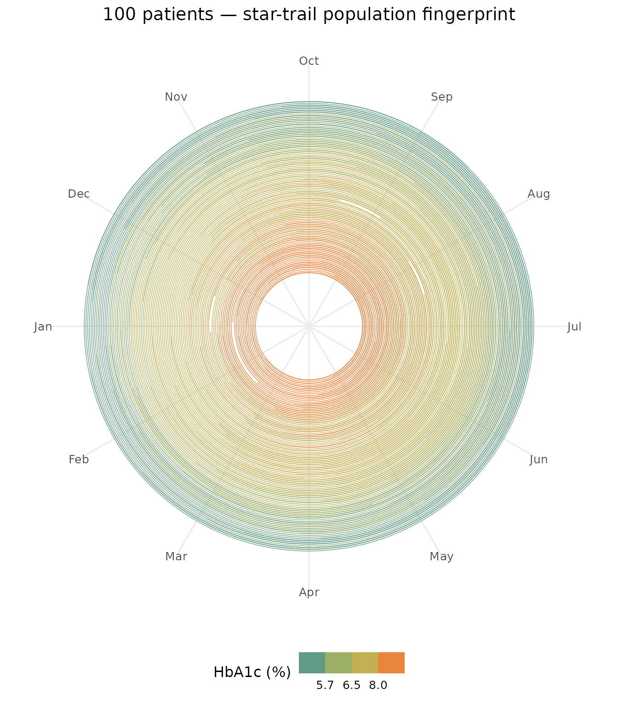
Well-controlled patients (teal) form a compact inner band; poorly controlled patients (red) arc outward. Comparing inner arcs (year 1) to outer arcs (year 2) reveals whether the cohort’s control improved or worsened over time.
22. All three layouts side by side
patchwork makes it easy to present heatmap, circular,
and periodic together as a complementary summary panel.
library(patchwork)
p_heat <- ggplot(
df_small, aes(x = visit_month, id = subject_id, fill = hba1c)
) +
geom_kodom_heatmap(bins = 6, sort_by = "mean") +
scale_fill_kodom(name = "HbA1c (%)") +
labs(x = "Month", y = "", title = "Heatmap") +
theme_kodom(legend_position = "bottom")
p_circ <- ggplot(
df_small, aes(x = visit_month, id = subject_id, colour = hba1c)
) +
geom_kodom_circular(sort_by = "mean", show_points = FALSE) +
scale_colour_kodom(name = "HbA1c (%)") +
coord_fixed() +
theme_kodom_circular() +
labs(title = "Circular")
p_peri <- ggplot(
df_small, aes(x = visit_month, id = subject_id, colour = hba1c)
) +
geom_kodom_periodic(
period = 12, sort_by = "mean",
show_points = FALSE, spiral_fraction = 0.2
) +
scale_x_kodom_periodic(period = 12, breaks = 0:11, labels = month.abb) +
scale_colour_kodom(name = "HbA1c (%)") +
scale_y_kodom_periodic() +
coord_kodom_periodic() +
theme_kodom_periodic() +
labs(title = "Periodic")
p_heat + p_circ + p_peri + plot_layout(widths = c(1.4, 1, 1))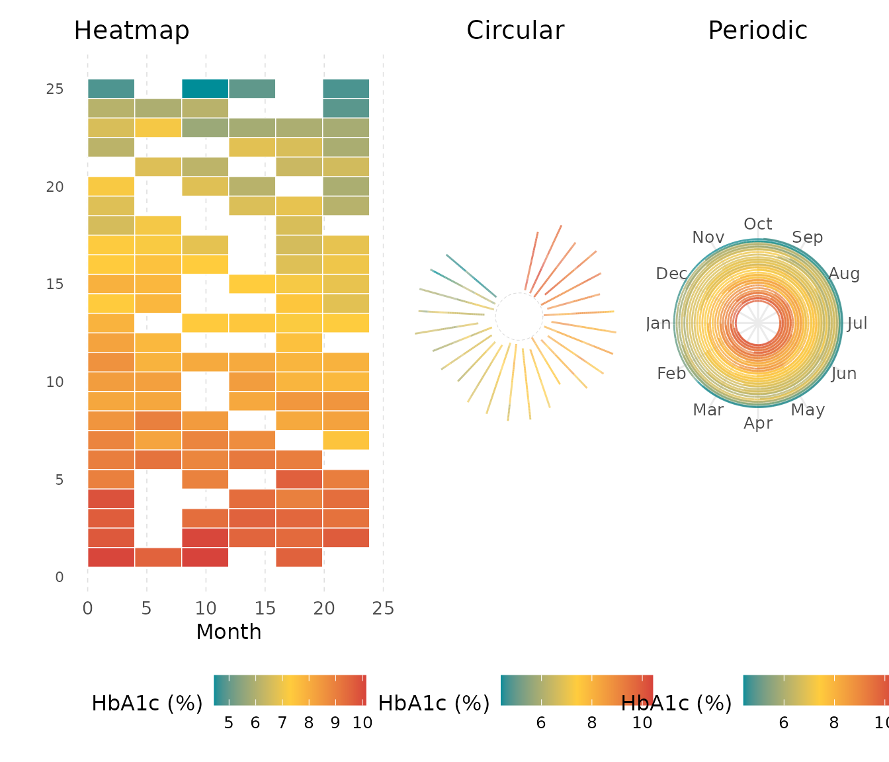